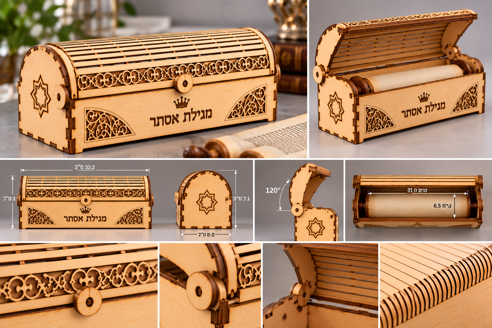

ASSEMBLE LAB / עיצוב הנדסי
אובייקטים.
מתוכננים.
מוצרים ורהיטים שבהם תכנון הנדסי, חומר וחיבורים הופכים לחלק מהעיצוב.
אפשר להתאים את המידות לחלל ולשימוש.

התאמה אישית / מידות לפי הצורך
מתוכנן להתאים.
הנדסה שמאפשרת שינוי.
כל דגם יכול להתחיל ממידות הבסיס ולהיות מותאם לחלל ולשימוש. ההתאמה נעשית דרך התכנון עצמו — מידות, מבנה וחיבורים — בהתאם לחומר ולאילוצי הייצור.
מוצרים / הקולקציה
בחרו אובייקט.
היכנסו לתהליך.
כל מוצר מקבל עמוד משלו — עם תמונות, תכנון, חיתוך והרכבה. דף הבית נשאר חלון ראווה נקי; הסיפור המלא נמצא בפנים.

GEOMETRIC
שולחן קפה שבו הצורה, המבנה וההרכבה מתוכננים כמערכת גאומטרית אחת.
מדף לילדים / 700
מדף קיר קומפקטי שבו המבנה, ההתקנה והגרפיקה נפתרו כמערכת אחת.
מעמד למקדחה / V364
מעמד מודולרי עם קורות, מדפים וחיבורים גלויים — מתכנון הייצור ועד לשימוש בפועל.

מעמד נעליים / גרסה A
מעמד נעליים עם שלושה מדפים, מושב עליון וחיזוקים פנימיים — מתוכנן כמערכת חיתוך והרכבה מדויקת.

שולחן עבודה
שולחן עבודה בפיתוח, עם חיזוקים אלכסוניים וחיבורים גלויים. גליון התכנון מציג את המבנה, המידות ופרטי ההרכבה.

מיטת תינוק
מיטת תינוק בפיתוח, עם לוחות עץ מעוטרים וחיבורים גלויים. ההדמיות מציגות את הרעיון ואת פרטי המבנה.

קופסה מהודרת לאתרוג
קופסה מהודרת לאתרוג בפיתוח, עם מכסה מעוטר ופינות מעוגלות. התכנון מציג את המבנה, החיבורים ופריסת חלקי העץ.

כיסוי למגילת אסתר
כיסוי מהודר למגילת אסתר בפיתוח, עם גוף עץ מעוטר ומכסה מעוגל. ההדמיה והשרטוטים מציגים את העיצוב, המבנה והחיבורים.
הרכבה
כדרך עיצוב.
אנחנו לא מוסיפים הנדסה אחרי שהמוצר כבר עוצב. ההנדסה היא הדרך שבה המוצר מקבל צורה. כל קו, חריץ וחיבור נבדקים במודל לפני שהם הופכים לחלק פיזי.
התאימו.
תכננו.
הרכיבו.
רוצים לברר על מוצר או להתאים אותו למידות שלכם? בחרו דגם, כמות ומידות רצויות, ונבדוק את אפשרויות הייצור וההתאמה לקראת הצעת מחיר.
בירור והצעת מחיר